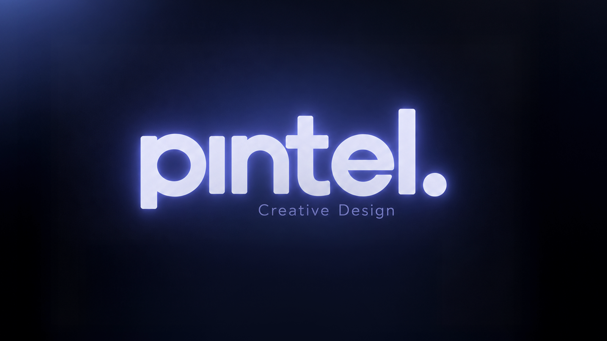
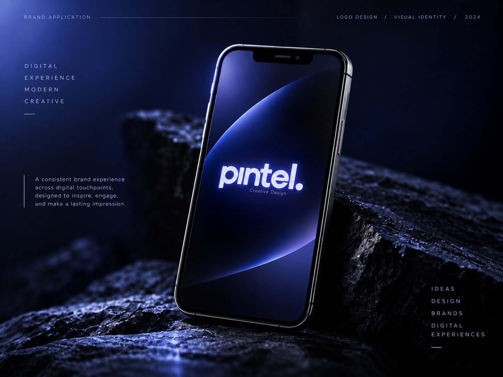
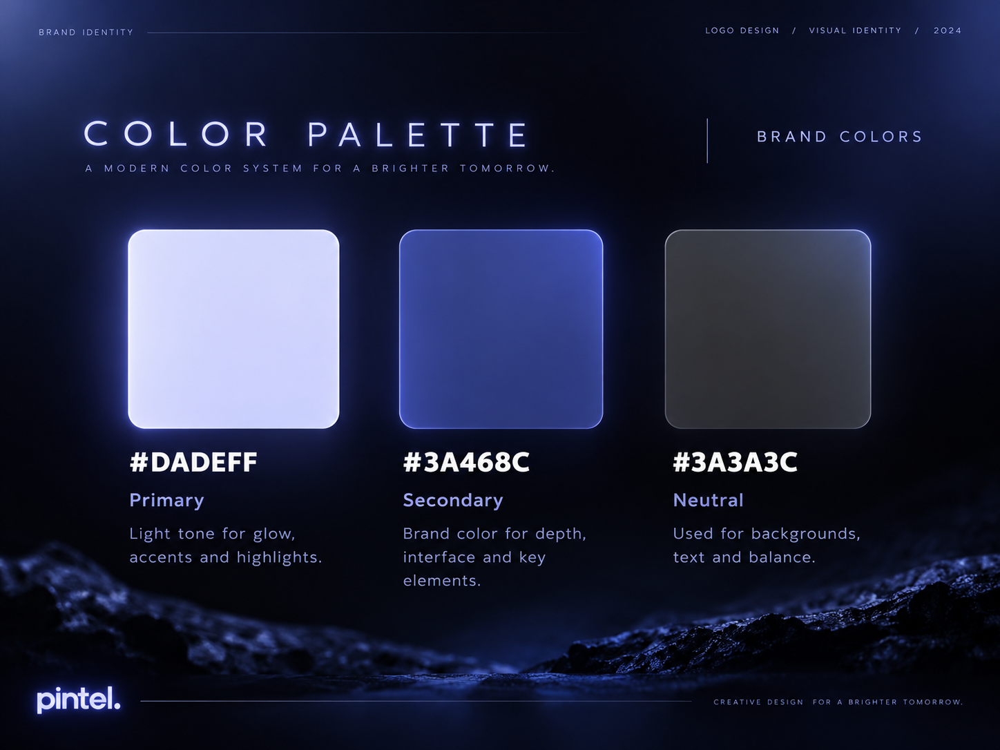
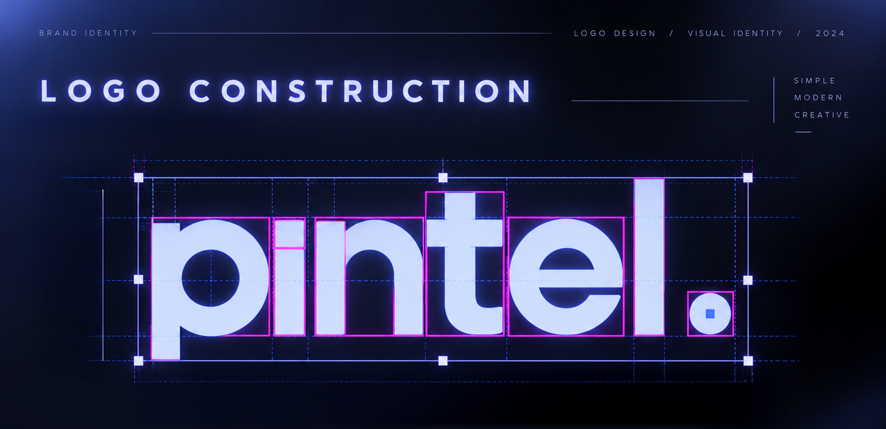

Pintel

Overview
For Pintel, a creative company, I developed a brand identity that reflects the imagination and precision behind its work. From the logo and typography to the color palette and supporting graphics, I shaped a cohesive visual language with a distinctive personality and the flexibility to grow with the company.


